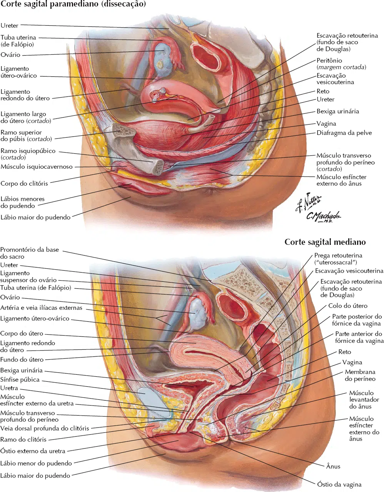
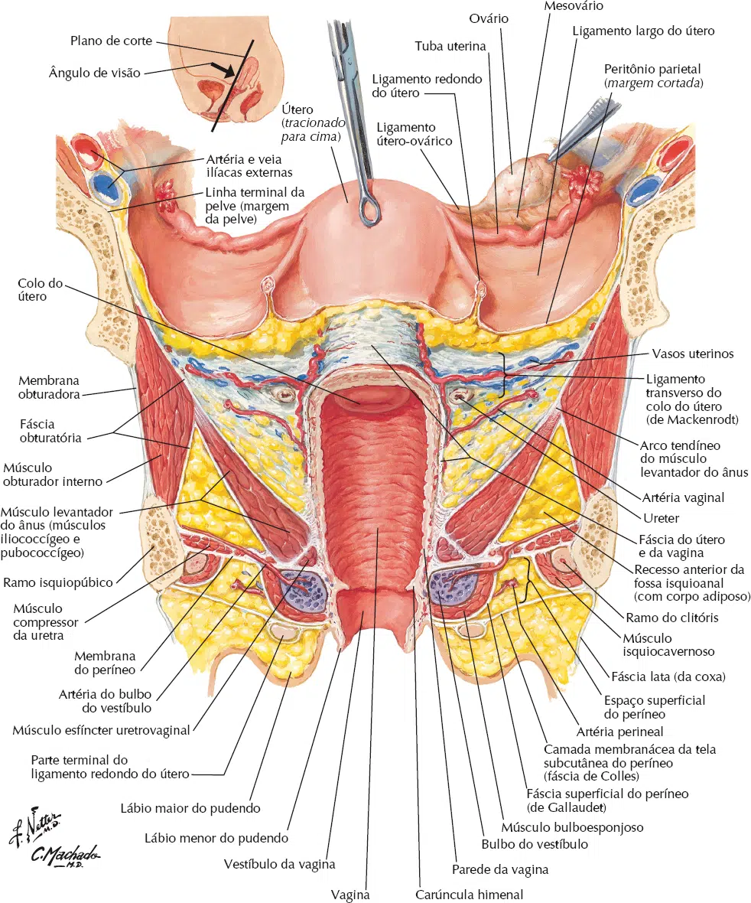
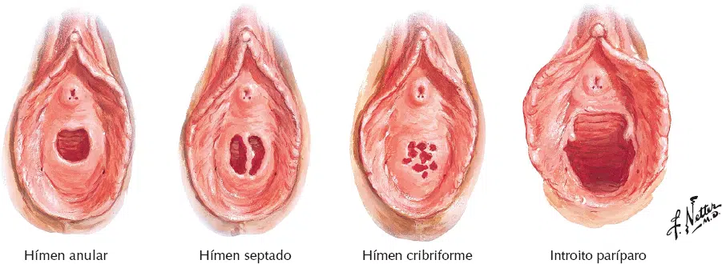
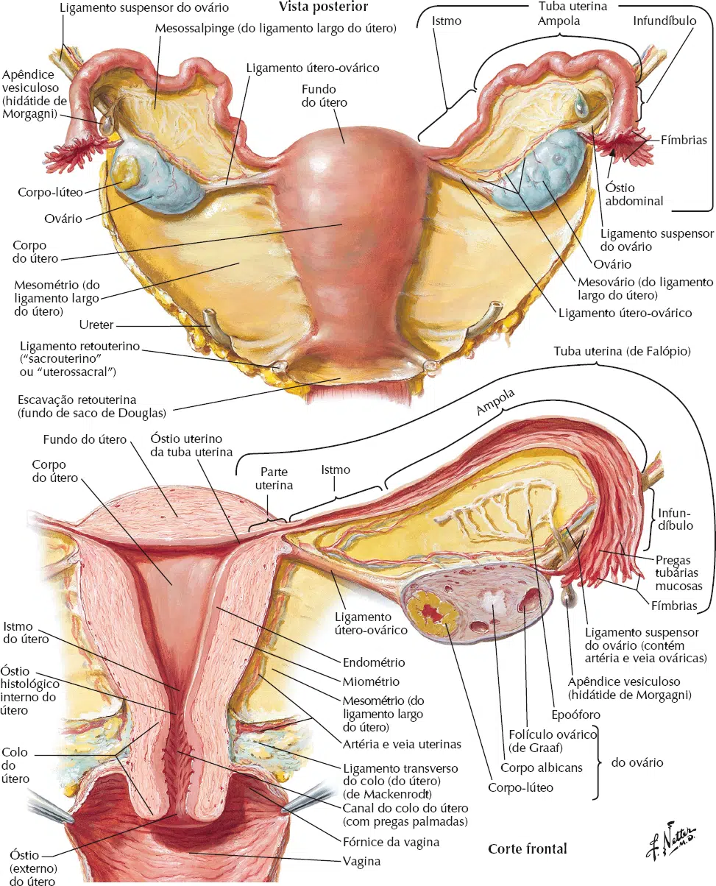
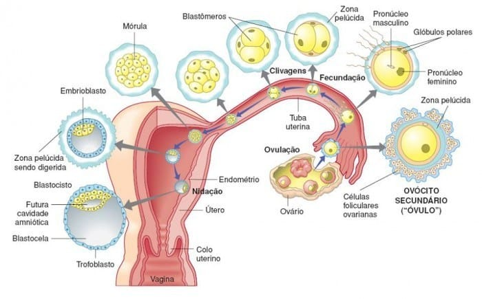
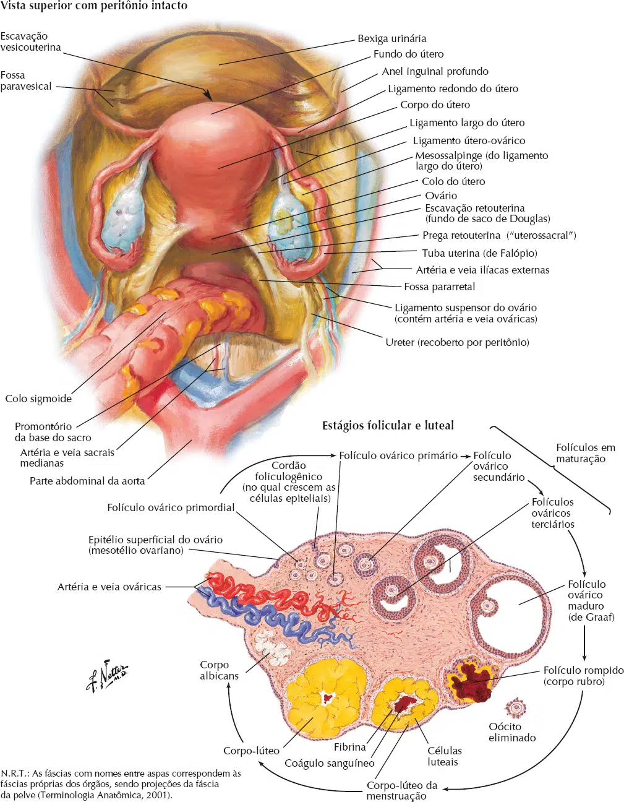
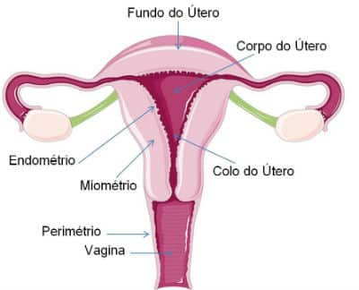
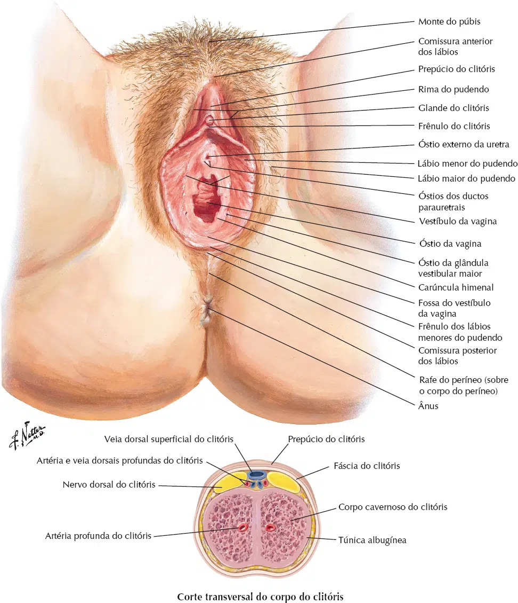
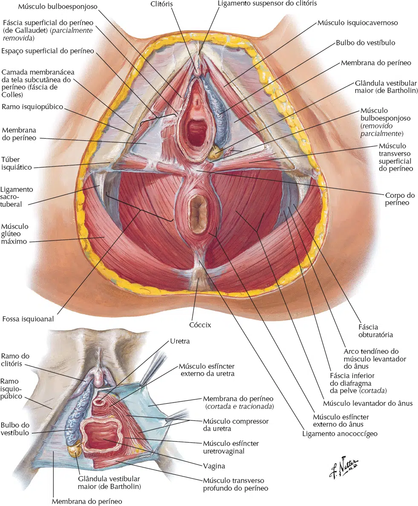

Ao contrário do homem, a conformação do sistema genital feminino é diferente, um dos motivos é que a mulher no caso é responsável por abrigar o novo ser durante toda a gestação.
Portanto seus órgão se desenvolveram para desempenhar essas funções.
O aparelho genital feminino também tem sua divisão originada desde a embriologia é formado por órgãos:
Internos:
Vagina; ovários; tubas uterinas; útero.
Externos / Vulva / pudendo:
Monte púbico (Monte de Vênus); lábio maiores do pudendo; lábios menores do pudendo; clitóris; bulbos do vestíbulo; glândulas vestibulares (de Bartholin).
A vagina é um tubo músculo-membranáceo mediano, que superiormente insere-se no contorno da parte média da cérvix do útero e para baixo atravessa o diafragma urogenital para se abrir no pudendo feminino, cujo orifício chama-se óstio da vagina.
As suas funções são:
servir como órgão de cópula, canal do parto e via de excreção do fluxo menstrual.
No seu interior há o hímen, prega com finalidade de proteção, que oblitera parcialmente o óstio da vagina, apresentando forma e tamanho variáveis.



Os ovários são as gônadas femininas que produzem o ovócito* (gameta feminino) além dos hormônios estrógeno e progesterona.
Os ovários são os únicos órgãos que se localizam na cavidade peritoneal (sistema digestório).

Em mulheres que nunca tiveram filhos, os ovários tem o formato ovalado e medem cerca de 3 cm de comprimento, 1,5 cm de largura e 1cm de espessura, estão localizados, um de cada lado, próximos a parede lateral da pelve menor em um recesso chamado fossa ovariana.
O processo de produção dos gametas na mulher se inicia no período fetal ainda, ou seja, as mulheres produzem seus gametas ainda no ventre de suas mães, ao contrário dos homens que produzem os gametas a partir da adolescência e se mantém praticamente durante toda a vida sexual.
O que ocorre com as mulheres é que elas liberam geralmente um ovócito em cada período fértil a partir da primeira menstruação, se encerrando na fase da menopausa.

No sistema reprodutivo feminino, um folículo ovariano é um saco cheio de líquido que contém um óvulo imaturo ou ovócito.
Estes folículos são encontrados nos ovários.
Durante a ovulação, um óvulo maduro é liberado de um folículo.
Enquanto vários folículos começam a desenvolver a cada ciclo, normalmente um só irá liberar um óvulo.
Os folículos que não liberam um óvulo maduro se desintegram e isso pode acontecer em qualquer fase do desenvolvimento folicular.
Isso é conhecido como atresia.

As tubas uterinas (Falópio) medem cerca de 10 centímetros cada uma e estende-se lateralmente do útero até os ovários, ao contrário do que se pensa, as tubas uterinas não são uma parte do útero e sim um órgão à parte, com funções e características bastante diferentes deste outro órgão.
Para melhor estudar e entender a anatomia e as funções da tuba é necessário dividi-la em três partes:
Infundíbulo – é a extremidade lateral da tuba uterina, possui forma de funil e esta intimamente relacionado com o ovário.
Nas bordas do infundíbulo existem as fímbrias, que são como franjas responsáveis por captar o ovócito liberado pelo ovário e conduzi-lo até o interior da tuba uterina.
Ampola – é a parte da tuba que se inicia medialmente ao infundíbulo, porção que possui a região mais larga da tuba uterina; a maior parte das fecundações são realizadas na ampola.
Istmo – é a parte mais estreita da tuba uterina, conecta esta ao útero.
O útero de uma mulher não grávida é um órgão muscular oco, piriforme, de paredes espessas, localizado entre a bexiga e o reto.
Tem de 7 a 8 cm de comprimento, 5 a 7 cm de largura e 2 a 3 cm de espessura.
O útero geralmente projeta-se para cima e para frente sobre a bexiga urinária.
Durante a gravidez o útero aumenta consideravelmente seu tamanho para acomodar o feto.
As partes do útero são:
Corpo;
Colo ou cérvix (Cérvice);
Istmo;
e fundo.
A parede uterina é formada por três camadas:
a camada mais externa chamada perimétrio – consiste em peritônio sustentado por uma fina camada de tecido conjuntivo;
uma camada muscular média, o miométrio; consiste em 12 a 15 mm de músculo liso.
O miométrio aumenta muito durante a gravidez.
Os principais ramos dos vasos sanguíneos e nervos do útero estão localizados nesta camada.
a camada mucosa, interna, denominada endométrio, está firmemente aderida ao miométrio.
O endométrio, que é parcialmente descamado a cada mês durante a menstruação, reveste apenas o corpo do útero.

Os órgãos genitais externos em conjunto formam o pudendo feminino ou vulva.
A vulva é a região externa do órgão genital feminino, onde ficam os pelos e os pequenos e grandes lábios.
Os sinônimos vulva e pudendo incluem todas essas partes; o termo vulva é usado com frequência na clínica.
O pudendo serve:
Como tecido sensitivo e erétil para excitação e relação sexual;
Para orientar o fluxo de urina;
Para evitar a entrada de material estranho nos sistemas genital e urinário.

O vestíbulo da vagina é o espaço circundado pelos lábios menores do pudendo no qual se abrem os óstios da uretra e da vagina e os ductos das glândulas vestibulares maiores e menores.
O óstio externo da uretra está localizado 2 a 3 cm posteroinferiormente à glande do clitóris e anteriormente ao óstio da vagina.
De cada lado do óstio externo da uretra há aberturas dos ductos das glândulas uretrais.
As aberturas dos ductos das glândulas vestibulares maiores estão localizadas nas faces mediais superiores dos lábios menores do pudendo, nas posições de 5 e 7 horas em relação ao óstio da vagina na posição de litotomia.
Os bulbos do vestíbulo são duas massas de tecido erétil alongado, com cerca de 3 cm de comprimento.
Situam-se lateralmente ao longo do óstio da vagina, superior ou profundamente aos lábios menores do pudendo (não dentro), imediatamente inferiores à membrana do períneo.
São cobertos inferior e lateralmente pelos músculos bulboesponjosos que se estendem ao longo de seu
comprimento.
Os bulbos do vestíbulo são homólogos ao bulbo do pênis.
Proporciona durante o ato sexual maior contato entre o pênis e o orifício da vagina, dando a sensação de peso e edema na região pudenda.

As glândulas vestibulares maiores (glândulas de Bartholin), com cerca de 0,5 cm de diâmetro, estão situadas no espaço superficial do períneo.
Situam-se de cada lado do vestíbulo da vagina, póstero-lateralmente ao óstio da vagina e inferiormente à membrana do períneo; assim, estão no espaço superficial do períneo.
As glândulas vestibulares maiores são redondas ou ovais, sendo parcialmente superpostas posteriormente pelos bulbos do vestíbulo.
Como os bulbos, são parcialmente circundadas pelos músculos bulboesponjosos.
Os ductos delgados dessas glândulas seguem profundamente aos bulbos do vestíbulo e se abrem no vestíbulo de cada lado do óstio vaginal.
Essas glândulas secretam muco para o vestíbulo durante a excitação sexual.
As glândulas vestibulares menores são pequenas glândulas de cada lado do vestíbulo da vagina que se abrem nele entre os óstios da uretra e da vagina.
Essas glândulas secretam muco para o vestíbulo da vagina, o que umedece os lábios do pudendo e o vestíbulo da vagina.
O monte do púbis é a eminência adiposa, arredondada, anterior à sínfise púbica, tubérculos púbicos e
ramo superior do púbis.
A eminência é formada por massa de tecido adiposo subcutâneo.
A quantidade de tecido adiposo aumenta na puberdade e diminui após a menopausa.
A superfície do monte é contínua com a parede anterior do abdome.
Após a puberdade, o monte do púbis é coberto por pelos pubianos encrespados.
Os lábios maiores do pudendo são pregas cutâneas proeminentes que proporcionam proteção indireta para o clitóris e para os óstios da uretra e da vagina.
Cada lábio maior é preenchido principalmente por um “prolongamento digital” de tecido subcutâneo frouxo contendo músculo liso e a extremidade do ligamento redondo do útero.
As faces externas dos lábios maiores na mulher adulta são cobertas por pele pigmentada contendo muitas
glândulas sebáceas e por pelos pubianos encrespados.
As faces internas dos lábios são lisas, rosadas e não têm pelos.
Posteriormente, em mulheres nulíparas (que nunca tiveram filhos), fundem-se para formar uma crista, a comissura posterior, que está situada sobre o corpo do períneo e é o limite posterior da vulva.
Essa comissura geralmente desaparece após o primeiro parto vaginal.
Os lábios menores do pudendo são pregas arredondadas de pele sem pelos e sem tecido adiposo.
Estão situados na rima do pudendo, circundam medialmente e fecham o vestíbulo da vagina, no qual se
abrem os óstios externo da uretra e da vagina.
Eles têm um núcleo de tecido conjuntivo esponjoso contendo tecido erétil em sua base e muitos pequenos vasos sanguíneos.
Anteriormente, os lábios menores formam duas lâminas.
As lâminas mediais de cada lado se unem e formam o frênulo do clitóris.
As lâminas laterais unem-se anteriormente à glande do clitóris (ou muitas vezes anterior e inferiormente, assim superpondo-se à glande e encobrindo-a), e formam o prepúcio do clitóris.
Nas mulheres jovens, sobretudo as virgens, os lábios menores estão unidos posteriormente por uma pequena prega transversal, o frênulo dos lábios do pudendo.
Embora a face interna de cada lábio menor seja formada por pele fina e úmida, tem a cor rosa típica da túnica mucosa e contém muitas glândulas sebáceas e terminações nervosas sensitivas.
O clitóris é um órgão erétil localizado no ponto de encontro dos lábios menores do pudendo anteriormente.
Consiste em uma raiz e um pequeno corpo cilíndrico, formados por dois ramos, dois corpos cavernosos e a glande do clitóris.
Os ramos fixam-se aos ramos inferiores do púbis e à membrana do períneo, profundamente aos lábios do pudendo.
O corpo do clitóris é coberto pelo prepúcio.
Juntos, o corpo e a glande do clitóris têm cerca de 2 cm de comprimento e < 1 cm de diâmetro.
Ao contrário do pênis, o clitóris não tem relação funcional com a uretra ou a micção.
Atua apenas como órgão de excitação sexual.
O clitóris é muito sensível e aumenta de tamanho à estimulação tátil.
A glande do clitóris é a parte mais inervada do clitóris e tem densa provisão de terminações sensitivas.